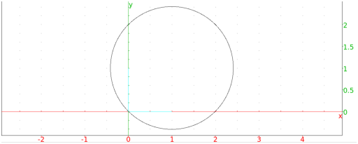
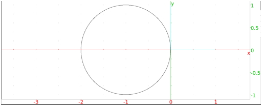

The circle command creates circles and arcs. You can specify the
circle in different ways.
circle can take one argument: eqn, the equation of a circle with variables x and
y (or an expression assumed to be set to 0).
circle(eqn) returns and draws the circle.
Example
Input:
circle(x2 + y2 - 2*x - 2*y)
Output:

circle can take two arguments:
P, a point.
α, a complex number.
circle(P,α) returns and draws the circle centered
at P and whose radius is |α|.
Example
Input:
circle(-1,i)
Output:

circle can take two arguments: A,B, two points (where B must be the value of
point and not simply the affix).
circle(A,B) returns and draws the circle whose
diameter is AB.
Example
Input:
circle(-1,point(i))
Output:
circle can take four mandatory arguments and two
optional arguments:
C, a point.
r, a complex number.
a,b, two real numbers.
Optionally, var1,var2, variable names.
circle(C,r,a,b) returns and draws an arc of the
circle with center C and radius |r|, with central angles a
and b. The angles start on the axis defined by C and C+r.
If the arguments var1 and var2 are given,
they will be assigned to the ends of the arc.